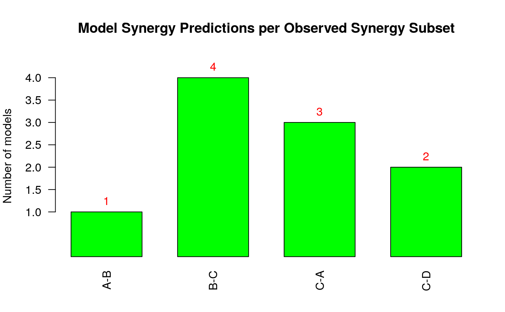

Use this function to easily make a barplot that shows the amount of models that predicted each synergy subset out of the set of all observed synergies.
make_barplot_on_synergy_subset_stats( synergy.subset.stats, threshold.for.subset.removal, bottom.margin, ylim.add = 0, cell.line = NULL )
| synergy.subset.stats | integer vector with values the amount of models that predicted each synergy subset, defined as a comma-separated string of drug combinations in the names attribute of the vector |
|---|---|
| threshold.for.subset.removal | integer. Use it to discard elements of
the |
| bottom.margin | integer used to vertically fit in the names of the drug
combinations in the x-axis (specified in inches). The best |
| ylim.add | integer. Signifies the height to add to the upper
|
| cell.line | string. The name of the cell line to be used in the title of the produced plot. Default value: NULL (the cell line name will not be added to the title). |
synergy.subset.stats = c(1,4,3,2) names(synergy.subset.stats) = c("A-B", "B-C", "C-A", "C-D") make_barplot_on_synergy_subset_stats(synergy.subset.stats, threshold.for.subset.removal = 0, bottom.margin = 4, ylim.add = 0.5)#> [1] TRUE